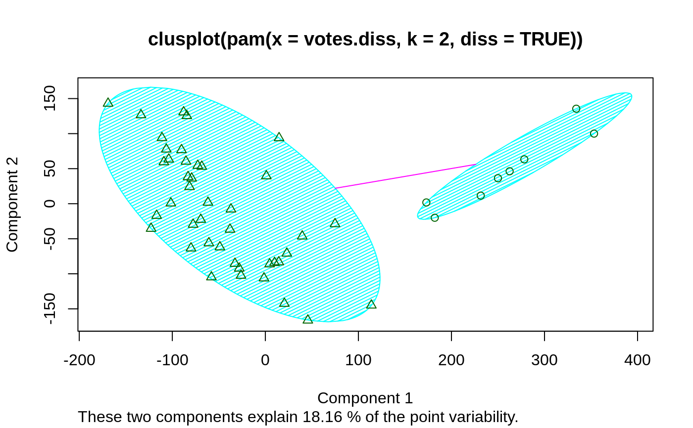
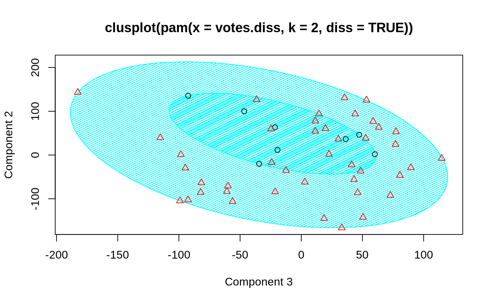
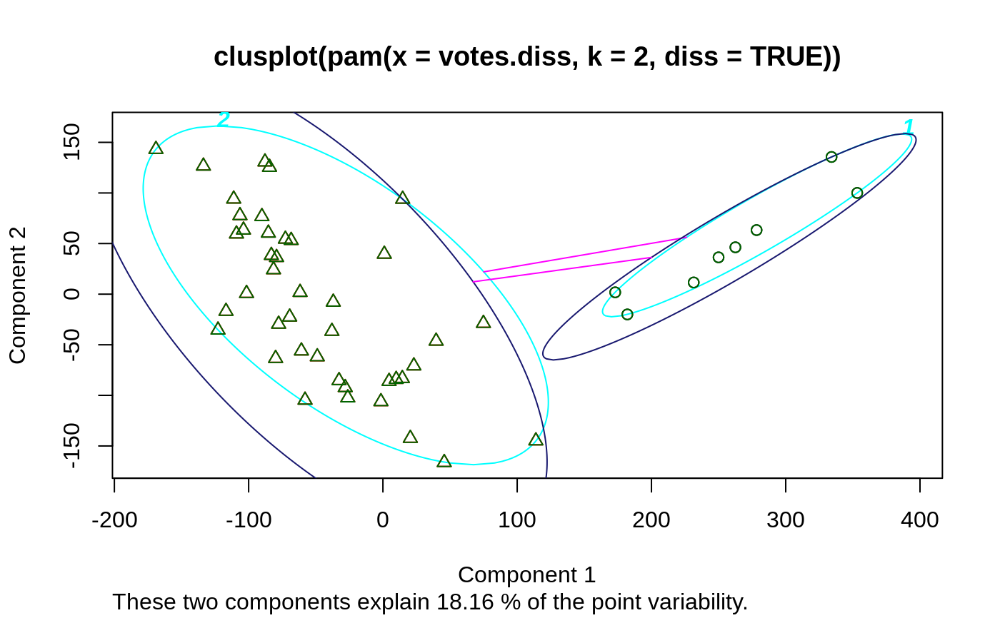
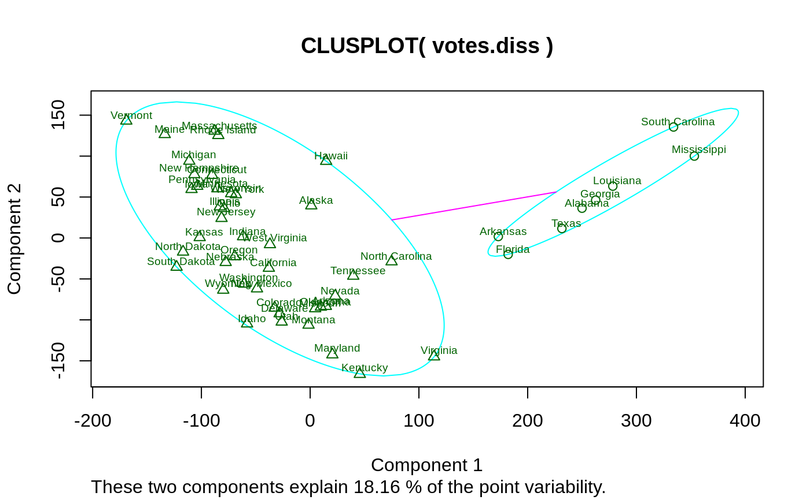
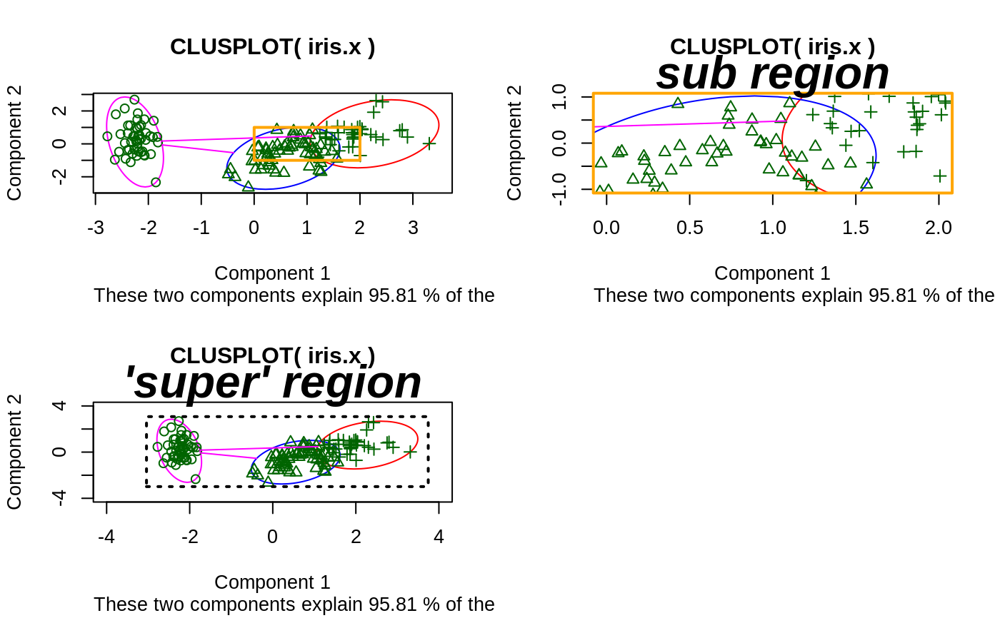

clusplot.default.RdCreates a bivariate plot visualizing a partition (clustering) of the data. All observation are represented by points in the plot, using principal components or multidimensional scaling. Around each cluster an ellipse is drawn.
# S3 method for default clusplot(x, clus, diss = FALSE, s.x.2d = mkCheckX(x, diss), stand = FALSE, lines = 2, shade = FALSE, color = FALSE, labels= 0, plotchar = TRUE, col.p = "dark green", col.txt = col.p, col.clus = if(color) c(2, 4, 6, 3) else 5, cex = 1, cex.txt = cex, span = TRUE, add = FALSE, xlim = NULL, ylim = NULL, main = paste("CLUSPLOT(", deparse(substitute(x)),")"), sub = paste("These two components explain", round(100 * var.dec, digits = 2), "% of the point variability."), xlab = "Component 1", ylab = "Component 2", verbose = getOption("verbose"), ...)
| x | matrix or data frame, or dissimilarity matrix, depending on
the value of the In case of a matrix (alike), each row corresponds to an observation,
and each column corresponds to a variable. All variables must be
numeric. Missing values ( In case of a dissimilarity matrix, |
|---|---|
| clus | a vector of length n representing a clustering of |
| diss | logical indicating if |
| s.x.2d | a |
| stand | logical flag: if true, then the representations of the n observations in the 2-dimensional plot are standardized. |
| lines | integer out of In case E1 and E2 overlap on the line through \(m1\) and \(m2\),
no line is drawn. Otherwise, the result depends on the value of
|
| shade | logical flag: if TRUE, then the ellipses are shaded in relation to their density. The density is the number of points in the cluster divided by the area of the ellipse. |
| color | logical flag: if TRUE, then the ellipses are colored with respect to their density. With increasing density, the colors are light blue, light green, red and purple. To see these colors on the graphics device, an appropriate color scheme should be selected (we recommend a white background). |
| labels | integer code, currently one of 0,1,2,3,4 and 5. If
The levels of the vector A possible |
| plotchar | logical flag: if TRUE, then the plotting symbols differ for points belonging to different clusters. |
| span | logical flag: if TRUE, then each cluster is represented by the ellipse with
smallest area containing all its points. (This is a special case of the
minimum volume ellipsoid.) There are also some special cases: When a cluster consists of only
one point, a tiny circle is drawn around it. When the points of a
cluster fall on a straight line, |
| add | logical indicating if ellipses (and labels if |
| col.p | color code(s) used for the observation points. |
| col.txt | color code(s) used for the labels (if |
| col.clus | color code for the ellipses (and their labels); only one if color is false (as per default). |
| cex, cex.txt | character expansion (size), for the point symbols and point labels, respectively. |
| xlim, ylim | numeric vectors of length 2, giving the x- and y-
ranges as in |
| main | main title for the plot; by default, one is constructed. |
| sub | sub title for the plot; by default, one is constructed. |
| xlab, ylab | x- and y- axis labels for the plot, with defaults. |
| verbose | a logical indicating, if there should be extra diagnostic output; mainly for ‘debugging’. |
| ... | Further graphical parameters may also be supplied, see
|
An invisible list with components:
When lines is 1 or 2 we optain a k by k matrix (k is the number of
clusters). The element in [i,j] is the distance between ellipse
i and ellipse j.
If lines = 0, then the value of this component is NA.
A vector of length k (where k is the number of clusters), containing the
amount of shading per cluster. Let y be a vector where element i is the
ratio between the number of points in cluster i and the area of ellipse i.
When the cluster i is a line segment, y[i] and the density of the cluster are
set to NA. Let z be the sum of all the elements of y without the NAs.
Then we put shading = y/z *37 + 3 .
a visual display of the clustering is plotted on the current graphics device.
clusplot uses function calls
princomp(*, cor = (ncol(x) > 2)) or
cmdscale(*, add=TRUE), respectively, depending on
diss being false or true. These functions are data reduction
techniques to represent the data in a bivariate plot.
Ellipses are then drawn to indicate the clusters. The further layout of the plot is determined by the optional arguments.
When we have 4 or fewer clusters, then the color=TRUE gives
every cluster a different color. When there are more than 4 clusters,
clusplot uses the function pam to cluster the
densities into 4 groups such that ellipses with nearly the same
density get the same color. col.clus specifies the colors used.
The col.p and col.txt arguments, added for R,
are recycled to have length the number of observations.
If col.p has more than one value, using color = TRUE can
be confusing because of a mix of point and ellipse colors.
Pison, G., Struyf, A. and Rousseeuw, P.J. (1999)
Displaying a Clustering with CLUSPLOT,
Computational Statistics and Data Analysis, 30, 381--392.
Kaufman, L. and Rousseeuw, P.J. (1990). Finding Groups in Data: An Introduction to Cluster Analysis. Wiley, New York.
Struyf, A., Hubert, M. and Rousseeuw, P.J. (1997). Integrating Robust Clustering Techniques in S-PLUS, Computational Statistics and Data Analysis, 26, 17-37.
## plotting votes.diss(dissimilarity) in a bivariate plot and ## partitioning into 2 clusters data(votes.repub) votes.diss <- daisy(votes.repub) pamv <- pam(votes.diss, 2, diss = TRUE) clusplot(pamv, shade = TRUE)## is the same as votes.clus <- pamv$clustering clusplot(votes.diss, votes.clus, diss = TRUE, shade = TRUE)## Now look at components 3 and 2 instead of 1 and 2: str(cMDS <- cmdscale(votes.diss, k=3, add=TRUE))#> List of 5 #> $ points: num [1:50, 1:3] 249.98 1.03 14.44 173.01 -37.99 ... #> ..- attr(*, "dimnames")=List of 2 #> .. ..$ : chr [1:50] "Alabama" "Alaska" "Arizona" "Arkansas" ... #> .. ..$ : NULL #> $ eig : NULL #> $ x : NULL #> $ ac : num 420 #> $ GOF : num [1:2] 0.215 0.215clusplot(pamv, s.x.2d = list(x=cMDS$points[, c(3,2)], labs=rownames(votes.repub), var.dec=NA), shade = TRUE, col.p = votes.clus, sub="", xlab = "Component 3", ylab = "Component 2")# "simple" cheap ellipses: larger than minimum volume: # here they are *added* to the previous plot: clusplot(pamv, span = FALSE, add = TRUE, col.clus = "midnightblue")## Setting a small *label* size: clusplot(votes.diss, votes.clus, diss = TRUE, labels = 3, cex.txt = 0.6)if(dev.interactive()) { # uses identify() *interactively* : clusplot(votes.diss, votes.clus, diss = TRUE, shade = TRUE, labels = 1) clusplot(votes.diss, votes.clus, diss = TRUE, labels = 5)# ident. only points } ## plotting iris (data frame) in a 2-dimensional plot and partitioning ## into 3 clusters. data(iris) iris.x <- iris[, 1:4] cl3 <- pam(iris.x, 3)$clustering op <- par(mfrow= c(2,2)) clusplot(iris.x, cl3, color = TRUE) U <- par("usr") ## zoom in : rect(0,-1, 2,1, border = "orange", lwd=2) clusplot(iris.x, cl3, color = TRUE, xlim = c(0,2), ylim = c(-1,1)) box(col="orange",lwd=2); mtext("sub region", font = 4, cex = 2) ## or zoom out : clusplot(iris.x, cl3, color = TRUE, xlim = c(-4,4), ylim = c(-4,4)) mtext("'super' region", font = 4, cex = 2) rect(U[1],U[3], U[2],U[4], lwd=2, lty = 3) # reset graphics par(op)